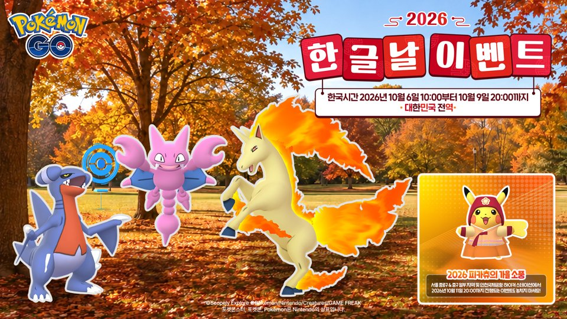

포켓몬GO 한글날 이벤트 정리 10월 9일 20시 종료, 출현 11종 루어모듈 향로 컬렉션 챌린지 안농 H
오늘이 10월 7일 수요일인데요, 아침에 공식 뉴스를 열어보니 어제 시작한 포켓몬GO 한글날 이벤트가 이번 주 금요일 저녁 8시에 끝난다고 적혀 있더라고요~ 아직 못 챙기신 분도, 이제 막 알게 되신 분도 계실 것 같아서 기간부터 출현 포켓몬, 루어모듈·향로 보너스, 컬렉션 챌린지까지 한 번에 모아봤어요.

©Scopely Explore ©Pokémon/Nintendo/Creatures/GAME FREAK, 공식 뉴스 · pokemongo.com/ko/news/hangul-nal-2026
배너 우하단의 별도 행사 문구는 이번 한글날 이벤트와 무관해요
포켓몬GO 한글날 이벤트는 언제까지 하나요
포켓몬GO 한글날 이벤트는 2026년 10월 6일 오전 10시부터 10월 9일 저녁 8시까지(한국시간) 대한민국 전역에서 열리며, 루어모듈과 향로로 한바이트·가디·나옹 등 11종과 색이 다른 포켓몬을 만날 수 있고 컬렉션 챌린지를 끝내면 안농(H)까지 받을 수 있어요.
- 시작: 10월 6일(화) 오전 10시
- 종료: 10월 9일(금) 저녁 8시 — 이후엔 보너스도 챌린지도 끝나요
- 지역: 대한민국 전역
이벤트는 3일 10시간 동안 이어지는데, 오늘 수요일이 그 둘째 날이에요. 오늘을 빼면 남은 건 목요일이랑 금요일뿐이고, 마감일인 10월 9일은 한글날 공휴일이라 9일부터 11일까지 3일 연휴가 시작되는 날이거든요. 연휴 첫날이라고 느긋하게 있다가는 그날 저녁 8시에 이벤트가 끝나 버리니까, 연휴 전 마지막 시간이라고 생각하고 챙기시는 게 좋아요. 루어모듈이나 향로는 오늘이나 내일 낮에 한 번 돌려두는 쪽이 마음 편하더라고요.
출현 포켓몬 11종, 이름만 봐도 한글날이에요
이번 이벤트에서 루어모듈과 향로에 이끌려 나오는 포켓몬은 한바이트·글라이거·날쌩마·가디·가보리·나옹·나룸퍼프·다꼬리·다부니·라이츄·라프라스까지 모두 11종이에요. 앞의 세 마리는 첫 글자만 이어 읽으면 한·글·날이 되고, 나머지 여덟 마리는 가·나·다·라로 시작하는 이름이라 한글날이랑 잘 어울리는 라인업이잖아요.
| 한글 이름 | 영문명 | 도감번호 | 연결고리 |
|---|---|---|---|
| 한바이트 | Gabite | #444 | '한' — 한글날 첫 글자 |
| 글라이거 | Gligar | #207 | '글' — 한글날 둘째 글자 |
| 날쌩마 | Rapidash | #78 | '날' — 한글날 셋째 글자 |
| 가디 | Growlithe | #58 | '가'로 시작 |
| 가보리 | Aron | #304 | '가'로 시작 |
| 나옹 | Meowth | #52 | '나'로 시작 |
| 나룸퍼프 | Swirlix | #684 | '나'로 시작 |
| 다꼬리 | Furret | #162 | '다'로 시작 |
| 다부니 | Audino | #531 | '다'로 시작 |
| 라이츄 | Raichu | #26 | '라'로 시작 |
| 라프라스 | Lapras | #131 | '라'로 시작 |
도감번호로 줄을 세우면 라이츄(#26)가 제일 앞이고 나룸퍼프(#684)가 제일 뒤예요. 한바이트는 한카리아스로 이어지는 중간 진화 단계고 라이츄는 피츄 계열의 최종 진화형이라, 진화 단계가 제각각인 포켓몬이 한 표에 섞여 있네요. 컬렉션 챌린지 보상인 안농까지 합치면 12종이 되는데요, 안농은 루어모듈·향로로 나오는 게 아니라 챌린지 보상이라서 위 표에는 넣지 않았어요.
루어모듈이랑 향로 보너스는 어떻게 붙나요
일반 루어모듈과 향로를 쓰면 위 11종이 이끌려 나오고, 공식 안내상 11종 모두 이벤트 기간에 색이 다른 포켓몬이 나올 확률이 높아져요. 이벤트 중 효과 시간은 이렇게 안내돼 있습니다.
- 루어모듈 효과: 1시간
- 향로 효과: 2시간 (산책향로는 제외)
산책향로만 빠지거든요, 그래서 평소 걸으면서 쓰던 향로가 산책향로라면 일반 향로로 바꿔 쓰셔야 해요. 집 앞 포켓스톱에 루어모듈을 꽂아두는 방법도 되니까 걷는 시간이 없는 날엔 루어모듈 쪽이 편합니다.
컬렉션 챌린지를 끝내면 뭘 받을 수 있나요
컬렉션 챌린지를 완료하면 경험치, 별의모래, 안농(H) 만남까지 세 가지 보상이 붙고, 대한민국 전역에서 이벤트 기간 동안 이용할 수 있어요.
- 경험치 5,000 XP
- 별의모래 5,000
- 안농(H) 만남 — 운이 좋으면 색이 다른 안농이 나와요
안농은 알파벳 모양마다 생김새가 다른 포켓몬인데, 이번 보상은 그중 H 모양이에요. 영어로는 Unown이고 전국도감 201번이에요. 색이 다른 모습은 영어로 Shiny라고 부르니까, 영어 커뮤니티 글을 찾아보실 땐 이 두 단어를 기억해두시면 편합니다. 다만 챌린지를 어디서 시작하는지, 어떤 조건을 채워야 하는지는 아직 알려진 게 없더라고요. 색이 다른 포켓몬의 구체적인 확률도 공개되지 않았으니, 저도 인게임 이벤트 화면에서 직접 확인해보려고요 ㅎㅎ
자주 묻는 질문
Q. 해외에서도 한글날 이벤트를 할 수 있나요?
공식 안내가 대한민국 전역에서 이벤트 기간에 이용하는 것으로 나와 있어서, 한국에서 접속해 즐기는 이벤트로 보시면 돼요. 시각도 한국시간 기준이라, 마감인 10월 9일 저녁 8시도 한국시간으로 맞춰 보시면 헷갈리지 않아요.
Q. 이벤트 내용이 중간에 바뀔 수도 있나요?
공식 안내에 개최가 중지되거나 내용이 변경될 수 있다는 고지가 들어 있어요. 최신 소식은 포켓몬GO 공식 SNS·앱 푸시·메일로 전해지니 알림을 켜두면 편합니다.
Q. 산책향로로도 이벤트 보너스를 받을 수 있나요?
향로 효과 2시간은 산책향로를 제외한다고 안내돼 있어요. 이번 이벤트는 일반 루어모듈과 일반 향로로 노리셔야 합니다.
종료 전 체크리스트
마감 전에 아래 항목만 한 번 훑어보시면 놓치는 게 줄어요. 연휴가 시작되는 날 저녁에 끝나는 이벤트라서, 미리 챙겨두는 쪽이 훨씬 편하답니다.
- 루어모듈은 1시간, 향로는 2시간 효과라서 마감 시각에 맞춰 켜두기
- 향로는 산책향로가 아닌 일반 향로인지 확인하기
- 컬렉션 챌린지 보상 3종(5,000 XP·별의모래 5,000·안농(H) 만남)을 받을 수 있게 인게임 이벤트 화면에서 조건 확인하기
- 주변 안전과 지역 방침 지키기
- 개최 중지나 내용 변경 고지가 없는지 공식 SNS·앱 푸시·메일 확인하기
한글날 이벤트 정리
정리하면 금요일 저녁 8시까지 루어모듈 1시간, 향로 2시간으로 11종과 색이 다른 포켓몬을 노리고, 컬렉션 챌린지로 안농(H)까지 챙기는 이벤트예요. 한글 이름 포켓몬을 모아보는 재미가 있어서 저도 내일 낮에 루어 하나는 꼭 켜두려고요~ ㅎㅎ 이벤트 중에는 주변 안전이랑 지역 방침도 꼭 지키시면서, 마감 전까지 즐거운 시간 보내세요.
참고한 곳
· 포켓몬GO 공식 뉴스 — 한글날 이벤트
· PokeAPI 도감 데이터 — 도감번호·영문명 대조
✔ 포켓몬 GO 같이 보기 좋은 내용
· 포켓몬고 GPS 안 잡힐때 해결방법 위치를 감지하지 못했습니다 오류, 안드로이드 아이폰 순서대로 체크
· 포켓몬고 과사삭벌레 진화 애프룡 단지래플 과미르 사과 사탕 총정리, 과미드라 조건까지
· 포켓몬GO 다투곰 진화조건, 포켓몬고 링곰 깜지곰사탕 100개 보름달 타이밍까지